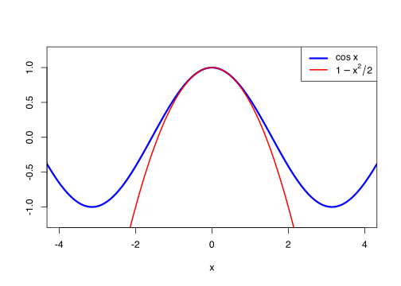

n <- 1e6
phi <- function(x) cos(x)
samples <- rnorm(n)
MCest <- mean(phi(samples))
MCest[1] 0.6061676\[\newcommand{\Exg}{\operatorname{\mathbb{E}}} \newcommand{\Ex}{\mathbb{E}} \newcommand{\Ind}{\mathbb{I}} \newcommand{\Var}{\operatorname{Var}} \newcommand{\Cov}{\operatorname{Cov}} \newcommand{\Corr}{\operatorname{Corr}} \newcommand{\ee}{\mathrm{e}}\]
Let’s recap where we’ve got to. The Monte Carlo estimator of \(\theta = \Exg \phi(X)\) is \[ \widehat{\theta}_n^{\mathrm{MC}} = \frac{1}{n} \sum_{i=1}^n \phi(X_i), \] where \(X_1, X_2, \dots, X_n\) are IID random samples from \(X\). The mean-square error of this estimator is \[{\displaystyle \operatorname{MSE}\big(\widehat{\theta}_n^{\mathrm{MC}}\big) = \frac{1}{n} \operatorname{Var}\big(\phi(X)\big)} . \] If we want a more accurate estimate, we can just take more samples \(n\). But the problem is that the root-mean-square error scales like \(1/\sqrt{n}\). To double the accuracy, we need four times as many samples; for one more decimal place of accuracy, we need one hundred times as many samples.
Are there other ways we could reduce the error of Monte Carlo estimation, so we need fewer samples? That is, can we use some mathematical ingenuity to adapt the Monte Carlo estimate to one with a smaller error?
Well, the mean-square error is the variance divided by \(n\). So if we can’t (or don’t want to) increase \(n\), perhaps we can decrease the variance instead? Strategies to do this are called variance reduction strategies. In this module, we will look at three variance reduction strategies:
Control variate: We can “anchor” our estimate of \(\Exg \phi(X)\) to a similar but easier-to-calculate value \(\Exg \psi(X)\). (This lecture)
Antithetic variables: Instead of using independent samples, we could use correlated samples. If the correlation is negative this can improve our estimate. (Lectures 6 and 7)
Importance sampling: Instead of sampling from \(X\), sample from some other more suitable distribution instead, then readjust the answer we get. (Lectures 8 and 9)
In last Friday’s lecture, I polled the class on this question: Estimate the average time it takes to fly from London to Washington D.C.
The actual answer is: 8 hours and 29 minutes.
The mean guess for the class was: 7 hours and 37 minutes (52 minutes too little)
The root-mean-square error for the guesses was: 133 minutes
After you’d guessed, I gave the following hint: Hint: The average time it takes to fly from London to New York is 8 hours and 10 minutes. After the hint:
The mean guess for the class was: 8 hours and 45 minutes (16 minutes too much)
The root-mean-square error for the guesses was: 49 minutes
So after the hint, the error of the class was reduced by 63%.
Why did the hint help? We were trying to estimate \(\theta^{\mathrm{DC}}\), the distance to D.C. But that’s a big number, and the first estimates had a big error (over an hour, on average). After the hint, I expect most people thought something like this: “The answer \(\theta^{\mathrm{DC}}\) is going to be similar to the \(\theta^{\mathrm{NY}} =\) 8:10 to New York, but Washington D.C. is a bit further, so I should increase the number a bit, but not too much.”
To be more mathematical, we could write \[\theta^{\mathrm{DC}} = \theta^{\mathrm{DC}} + \big(\theta^{\mathrm{NY}} - \theta^{\mathrm{NY}}\big)= \underbrace{\big(\theta^{\mathrm{DC}} - \theta^{\mathrm{NY}}\big)}_{\text{small}} + \underbrace{\theta^{\mathrm{NY}}\vphantom{\big)}}_{\text{known}} . \] In that equation, the second term, \(\theta^{\mathrm{NY}} =\) 8:10 was completely known, so had error 0, while the first term \(\theta^{\mathrm{DC}} - \theta^{\mathrm{NY}}\) (actually 19 minutes) was a small number, so only had a small error.
This idea of improving an estimate by “anchoring” it to some known value is called controlled estimation. It is a very useful idea in statistics (and in life!).
We can apply this idea to Monte Carlo estimation too. Suppose we are trying to estimate \(\theta = \Exg \phi(X)\). We could look for a function \(\psi\) that is similar to \(\phi\) (at least for the values of \(x\) that have high probability for the random variable \(X\)), but where we know for certain what \(\Exg \psi(X)\) is. Then we can write \[ \theta = \Exg \phi(X) = \Exg \big(\phi(X) - \psi(X) + \psi(X)\big) = \underbrace{\Exg\big(\phi(X) - \psi(X)\big)}_{\text{estimate this with Monte Carlo}} + \underbrace{\Exg \psi(X)\vphantom{\big)}}_{\text{known}} . \]
Here, \(\psi(X)\) is known as the control variate.
Definition 5.1 Let \(X\) be a random variable, \(\phi\) a function, and write \(\theta = \Exg\phi(X)\). Let \(\psi\) be a function such that \(\eta = \Exg\psi(X)\) is known. Suppose that \(X_1, X_2, \dots, X_n\) are a random sample from \(X\). Then the control variate Monte Carlo estimate \(\widehat\theta_n^{\mathrm{CV}}\) of \(\theta\) is \[ \widehat{\theta}_n^{\mathrm{CV}} = \frac{1}{n} \sum_{i=1}^n \big(\phi(X_i) - \psi(X_i)\big) + \eta . \]
Example 5.1 Let’s try to estimate \(\Ex \cos(X)\), where \(X \sim \operatorname{N}(0,1)\) is a standard normal distribution.
We could do this the “usual” Monte Carlo way.
n <- 1e6
phi <- function(x) cos(x)
samples <- rnorm(n)
MCest <- mean(phi(samples))
MCest[1] 0.6061676But we could see if we can do better with a control variate. But what should we pick for the control function \(\psi\)? We want something that’s similar to \(\phi(x) = \cos(x)\), but where we can actually calculate the expectation.
Here’s a suggestion. If we remember our Taylor series, we know that, for \(x\) near \(0\), \[ \cos x \approx 1 - \frac{x^2}{2!} + \frac{x^4}{4!} - \frac{x^6}{6!} + \cdots . \] So how about taking the first two nonzero terms in the Taylor series \[ \psi(x) = 1 - \frac{x^2}{2} . \] That is quite close to \(\cos x\), at least for the values of \(x\) near 0 that \(X \sim \operatorname{N}(0,1)\) is most likely to take.
curve(
cos(x), from = -4.5, to = 4.5,
col = "blue", lwd = 3,
xlab = "x", ylab = "", xlim = c(-4,4), ylim = c(-1.2,1.2)
)
curve(1 - x^2 / 2, add = TRUE, col = "red", lwd = 2)
legend(
"topright", c("cos x", expression(1 - x^2 / 2)),
lwd = c(3, 2), col = c("blue", "red")
)
Not only that, but we know that for \(Y \sim \operatorname{N}(\mu, \sigma^2)\) we have \(\Ex Y^2 = \mu^2 + \sigma^2\). So \[ \Exg \psi(X) = \Exg \left(1 - \frac{X^2}{2} \right) = 1 - \frac{\Ex X^2}{2} = 1 - \frac{0^2 + 1}{2} = \frac12 . \]
So our control variate estimate is:
psi <- function(x) 1 - x^2 / 2
CVest <- mean(phi(samples) - psi(samples)) + 1/2
CVest[1] 0.6065323What is the error in a control variate estimate?
Theorem 5.1 Let \(X\) be a random variable, \(\phi\) a function, and \(\theta = \Exg\phi(X)\). Let \(\psi\) be a function such that \(\eta \Exg\psi(X)\) is known. Let \[ \widehat{\theta}_n^{\mathrm{CV}} = \frac{1}{n} \sum_{i=1}^n \big(\phi(X_i) - \psi(X_i)\big) + \eta\] be the control variate Monte Carlo estimator of \(\theta\). Then:
\(\widehat{\theta}_n^{\mathrm{CV}}\) is unbiased, in that \(\operatorname{bias}\big(\widehat{\theta}_n^{\mathrm{CV}}\big) = 0\).
The variance of of \(\widehat{\theta}_n^{\mathrm{CV}}\) is \({\displaystyle \operatorname{Var}\big(\widehat{\theta}_n^{\mathrm{CV}}\big) = \frac{1}{n} \operatorname{Var}\big(\phi(X) - \psi(X)\big)}\).
The mean-square error of \(\widehat{\theta}_n^{\mathrm{CV}}\) is \({\displaystyle \operatorname{MSE}\big(\widehat{\theta}_n^{\mathrm{CV}}\big) = \frac{1}{n} \operatorname{Var}\big(\phi(X) - \psi(X)\big)}\).
The root-mean-square error of \(\widehat{\theta}_n^{\mathrm{CV}}\) is \({\displaystyle \operatorname{RMSE}\big(\widehat{\theta}_n^{\mathrm{CV}}\big) = \frac{1}{\sqrt{n}} \sqrt{\operatorname{Var}\big(\phi(X) - \psi(X)\big)}}\).
Proof. This is very similar to Theorem 3.2, so we’ll just sketch the important differences.
In part 1, we have \[\begin{align*} \Exg \widehat{\theta}_n^{\mathrm{CV}} &= \Exg \left(\frac{1}{n} \sum_{i=1}^n \big(\phi(X_i) - \psi(X_i)\big)\right) + \eta \\ &= \frac{1}{n}\Exg \left(\sum_{i=1}^n \big(\phi(X_i) - \psi(X_i)\big)\right) + \eta \\ &= \frac{n}{n}\Exg\big(\phi(X) - \psi(X)\big) + \eta \\ &= \Exg\phi(X) - \Exg\psi(X) + \eta \\ &= \Exg\phi(X) , \end{align*}\] since \(\eta = \Exg\psi(X)\). So the estimator is unbiased.
For part 2, remembering that \(\eta = \Exg \psi(X)\) is a constant, so doesn’t affect the variance, we have \[\begin{align*} \Var \big(\widehat{\theta}_n^{\mathrm{CV}}\big) &= \Var \left(\frac{1}{n} \sum_{i=1}^n \big(\phi(X_i) - \psi(X_i)\big) + \eta \right) \\ &= \Big( \frac{1}{n}\Big)^2 \Var \left(\sum_{i=1}^n \big(\phi(X_i) - \psi(X_i)\big) \right) \\ &= \frac{n}{n^2} \Var \big(\phi(X) - \psi(X)\big) \\ &= \frac{1}{n} \Var \big(\phi(X) - \psi(X)\big) . \end{align*}\]
Parts 3 and 4 follow in the usual way.
This tells us that a control variate Monte Carlo estimate is good when the variance of \(\phi(X) - \psi(X)\). This variance is likely to be small if \(\phi(X) - \psi(X)\) is usually small – although, to be more precise, it’s more important for \(\phi(X) - \psi(X)\) to be consistent, rather than small per se.
As before, we can’t usually calculate the variance \(\Var(\phi(X) - \psi(X))\) exactly, but we can estimate it from the samples. Again, we use the sample variance \[S^2 = \frac{1}{n-1}\sum_{i=1}^n \Big(\big(\phi(X_i) - \psi(X_i)\big) - \big(\widehat\theta_n^{\mathrm{CV}} + \eta\big)\Big)^2 , \] and estimate the MSE and RMSE by \(S^2 / n\) and \(S / \sqrt{n}\) respectively.
Example 5.2 We return to Example 5.1, where we were estimating \(\Ex \cos(X)\) for \(X \sim \operatorname{N}(0,1)\).
The naive Monte Carlo estimate had mean-square and root-mean-square error
n <- 1e6
phi <- function(x) cos(x)
samples <- rnorm(n)
MC_MSE <- var(phi(samples)) / n
c(MC_MSE, sqrt(MC_MSE))[1] 2.002769e-07 4.475231e-04The variance and root-mean-square error of our control variate estimate, on the other hand, are
psi <- function(x) 1 - x^2 / 2
CV_MSE <- var(phi(samples) - psi(samples)) / n
c(CV_MSE, sqrt(CV_MSE))[1] 9.327741e-08 3.054135e-04This was a success! The mean-square error roughly halved, from \(2\times 10^{-7}\) to \(9.3\times 10^{-8}\). This meant the root-mean-square went down by about a third, from \(4.5\times 10^{-4}\) to \(3.1\times 10^{-4}\).
Halving the mean-square error would normally have required doubling the number of samples \(n\), so we have effectively doubled the sample size by using the control variate.
Next time: We look at our second variance reduction technique: antithetic variables.
Summary:
Variance reduction techniques attempt to improve on Monte Carlo estimation making the variance smaller.
If we know \(\eta = \Exg \psi(X)\), then the control variate Monte Carlo estimate is \[ \widehat{\theta}_n^{\mathrm{CV}} = \frac{1}{n} \sum_{i=1}^n \big(\phi(X_i) - \psi(X_i)\big) + \eta.\]
The mean-square error of the control variate Monte Carlo estimate is \[{\displaystyle \operatorname{MSE}\big(\widehat{\theta}_n^{\mathrm{MC}}\big) = \frac{1}{n} \operatorname{Var}\big(\phi(X) - \psi(X)\big)}.\]
Read more: Voss, An Introduction to Statistical Computing, Subsection 3.3.3.